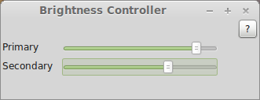
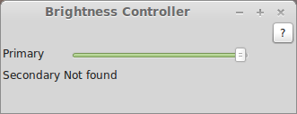

Brightness Controller allows you to control Brightness of your Primary and Secondary Display in Linux. It is a software based dimmer.
It allows you to control the brightness of your monitor to a better extent. For example, laptop's monitor brightness can be controlled using hardware keys at discrete values, such as 20%, 40%, 60%, ... 100%. Brightness Controller allows you to change the brightness to a better degree of control, ranging from 1% to 100%! It should be mentioned that it changes the present brightness value set via hardware control of your monitor. For example, if you set your Monitor's brightness to 50% using hardware buttons, then that will be the 100% value in Brightness controller.
Have troubles? Report an issue.
Three dependencies only.
$ sudo apt-get install python-wxgtk2.8
xrandr - that's what the program uses in the backend to control the brightness of your monitor!Apperance is subject to change based on the theme you are using. Those screenshots was taken in Linux Mint environment.
With two displays:

With one display:

For users:
For developers:
Version 1.0.1